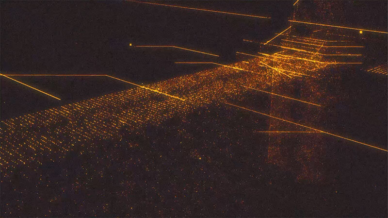
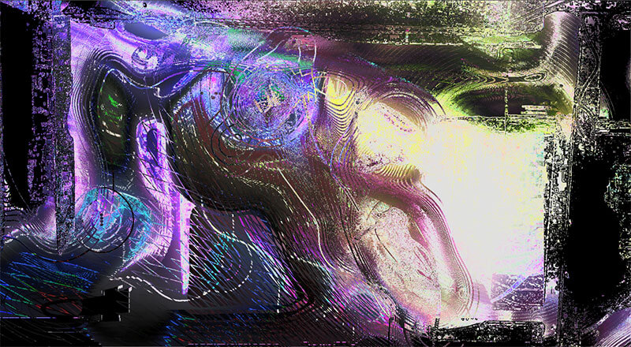

About Me
I'm Sean Cruz-Colatriano, a digital media artist who mainly strives in digital aesethetics. More often than not, my works are results from experimentation and the process of breaking composition to create art. I find beauty in the unorthodox; my process of breaking software and using it as it's maybe not intended.
My Work

Data Architecture
This is a screenshot of a video piece made in Touch Designer and AfterEffects that portrays code being used to construct 3D structure in a digital space.

Evolving Data
A screenshot of a video piece made in Touch Designer and After Effects; this piece uses particles to imitate code. They move around and build 3D forms that continually evolve.

Transmission
This is a screenshot of a video piece made in Touch Designer and After Effects. It portrays an interface performing a deep scan of the brain.

Neural Decay
This is a screenshot of a video piece made in After Effects where the human form is broken into abstract shapes and mesmerizing colors. It portrays the addiction of technology and how we lose ourselves as we progress further.
Contact Me
Email: ccsean21@gmail.com